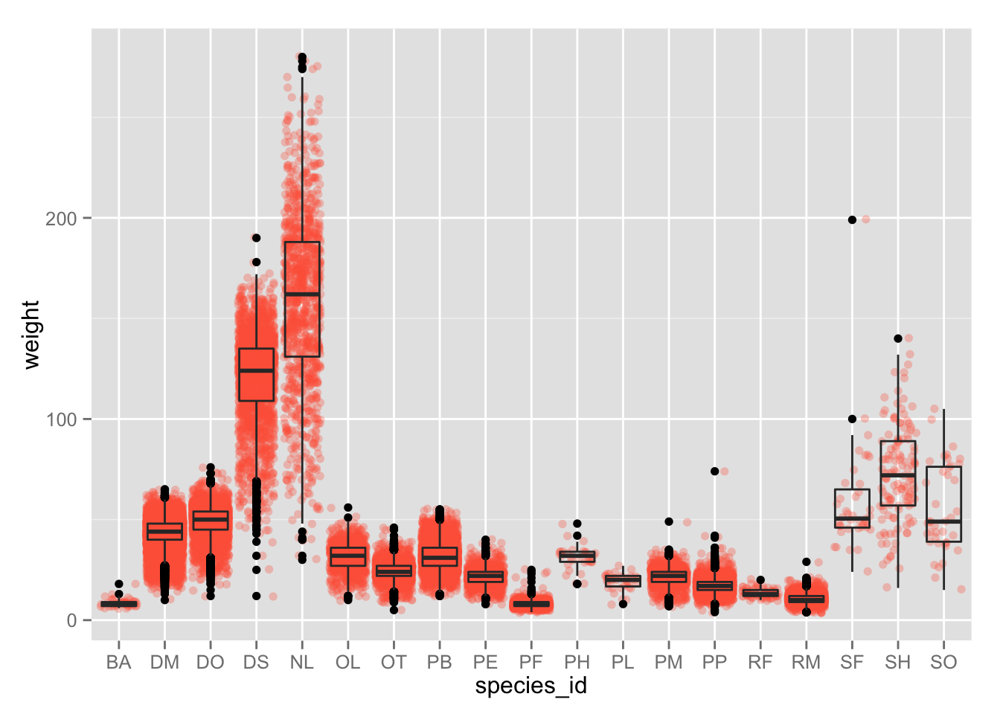
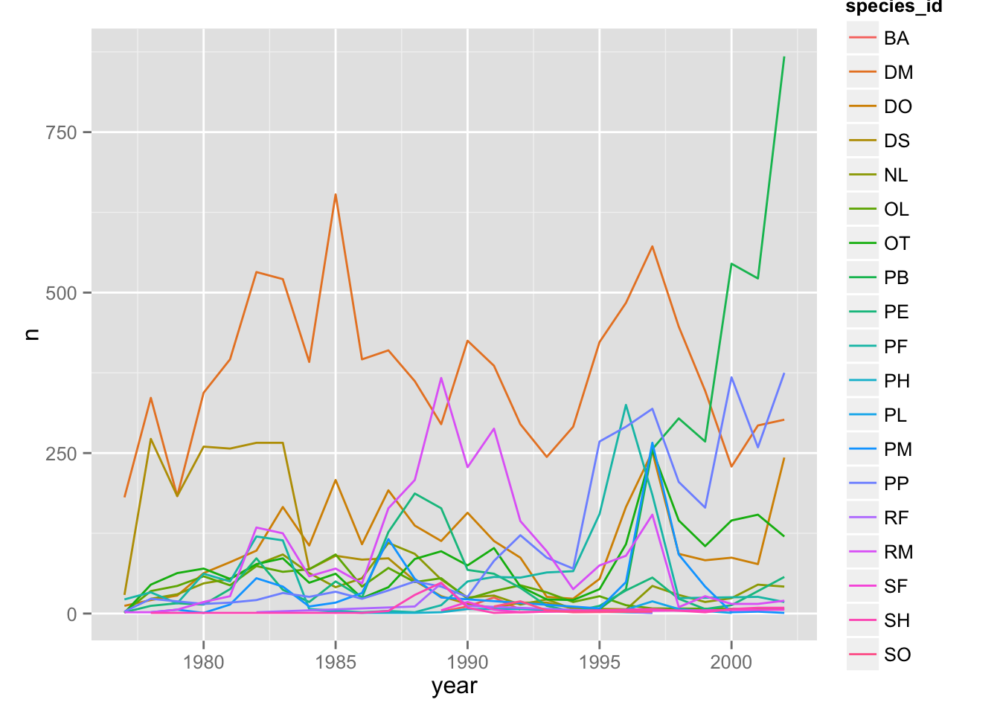

Data visualisation with ggplot2
Visualising data in R with ggplot2 package
Authors: Mateusz Kuzak, Diana Marek, Hedi Peterson
Disclaimer
We will here using functions of ggplot2 package. There are basic ploting capabilities in basic R, but ggplot2 adds more powerful plotting capabilities.
Learning Objectives
- Visualise some of the mammals data from Figshare surveys.csv
- Understand how to plot these data using R ggplot2 package. For more details on using ggplot2 see official documentation.
- Building step by step complex plots with ggplot2 package
Load required packages
# plotting package
library(ggplot2)
# piping / chaining
library(magrittr)
# modern dataframe manipulations
library(dplyr)Load data directly from figshare.
surveys_raw <- read.csv("http://files.figshare.com/1919744/surveys.csv")surveys.csv data contains some measurements of the animals caught in plots.
Data cleaning and preparing for plotting
Let’s look at the summary
summary(surveys_raw)There are few things we need to clean in the dataset.
There are missing values for species_id in some records. Let’s remove those.
surveys_complete <- surveys_raw %>%
filter(species_id != "")We saw in summary, there were NA’s in weight and hindfoot_length. Let’s remove rows with missing values in weight and hindfoot_length. In fact, let’s combine this with removing empty species_id, so we have one command and don’t make lots of intermediate variable names. This is where piping becomes really handy!
surveys_complete <- surveys_raw %>%
filter(species_id != "") %>% # remove missing species_id
filter(!is.na(weight)) %>% # remove missing weight
filter(!is.na(hindfoot_length)) # remove missing hindfoot_lengthThere are a lot of species with low counts, let’s remove the species with less than 10 counts.
# count records per species
species_counts <- surveys_complete %>%
group_by(species_id) %>%
tally
head(species_counts)
# get names of those frequent species
frequent_species <- species_counts %>%
filter(n >= 10) %>%
select(species_id)
surveys_complete <- surveys_complete %>%
filter(species_id %in% frequent_species$species_id)Make simple scatter plot of hindfoot_length (in millimeters) as a function of weight (in grams), using basic R plotting capabilities.
plot(x = surveys_complete$weight, y = surveys_complete$hindfoot_length)
Plotting with ggplot2
We will make the same plot using ggplot2 package.
ggplot2 is a plotting package that makes it simple to create complex plots from data in a dataframe. It uses default settings, which help creating publication quality plots with minimal amount of settings and tweaking.
With ggplot graphics are build step by step by adding new elements.
To build a ggplot we need to:
- bind the plot to a specific data frame using the
dataargument
ggplot(data = surveys_complete)- define aesthetics (
aes), that maps variables in the data to axes on the plot or to plotting size, shape color, etc.,
ggplot(data = surveys_complete, aes(x = weight, y = hindfoot_length))- add
geoms– graphical representation of the data in the plot (points, lines, bars). To add a geom to the plot use+operator:
ggplot(data = surveys_complete, aes(x = weight, y = hindfoot_length)) +
geom_point()
Notes:
- Anything you put in the
ggplot()function can be seen by any geom layers that you add. i.e. these are universal plot settings - This includes the x and y axis you set up in
aes()
Modifying plots
- adding transparency (alpha)
ggplot(data = surveys_complete, aes(x = weight, y = hindfoot_length)) +
geom_point(alpha = 0.1)
- adding colors
ggplot(data = surveys_complete, aes(x = weight, y = hindfoot_length)) +
geom_point(alpha = 0.1, color = "blue")
Boxplot
Visualising the distribution of weight within each species.
ggplot(data = surveys_complete, aes(x = species_id, y = weight)) +
geom_boxplot()
By adding points to boxplot, we can see particular measurements and the abundance of measurements.
ggplot(data = surveys_complete, aes(x = species_id, y = weight)) +
geom_jitter(alpha = 0.3, color = "tomato") +
geom_boxplot(alpha = 0)
Notice how the boxplot layer is on top of the jitter layer? Play around with the order of geoms and adjust transparency to see how to build up your plot in layers.
Challenge
Create boxplot for
hindfoot_length.
Plotting time series data
Let’s calculate number of counts per year for each species. To do that we need to group data first and count records within each group.
yearly_counts <- surveys_complete %>%
group_by(year, species_id) %>%
tallyTimelapse data can be visualised as a line plot with years on x axis and counts on y axis.
ggplot(data = yearly_counts, aes(x = year, y = n)) +
geom_line()
Unfortunately this does not work, because we plot data for all the species together. We need to tell ggplot to split graphed data by species_id
ggplot(data = yearly_counts, aes(x = year, y = n, group = species_id)) +
geom_line()
We will be able to distinguish species in the plot if we add colors.
ggplot(data = yearly_counts, aes(x = year, y = n, group = species_id, color = species_id)) +
geom_line()
Faceting
ggplot has a special technique called faceting that allows to split one plot into multiple plots based on some factor. We will use it to plot one time series for each species separately.
ggplot(data = yearly_counts, aes(x = year, y = n, color = species_id)) +
geom_line() + facet_wrap(~species_id)
Now we would like to split line in each plot by sex of each individual measured. To do that we need to make counts in dataframe grouped by sex.
Challenges:
- filter the dataframe so that we only keep records with sex “F” or “M”s
sex_values = c("F", "M")
surveys_complete <- surveys_complete %>%
filter(sex %in% sex_values)
- group by year, species_id, sex
yearly_sex_counts <- surveys_complete %>%
group_by(year, species_id, sex) %>%
tally
- make the faceted plot splitting further by sex (within single plot)
ggplot(data = yearly_sex_counts, aes(x = year, y = n, color = species_id, group = sex)) +
geom_line() + facet_wrap(~ species_id)
We can improve the plot by coloring by sex instead of species (species are already in separate plots, so we don’t need to distinguish them better)
ggplot(data = yearly_sex_counts, aes(x = year, y = n, color = sex, group = sex)) +
geom_line() + facet_wrap(~ species_id)